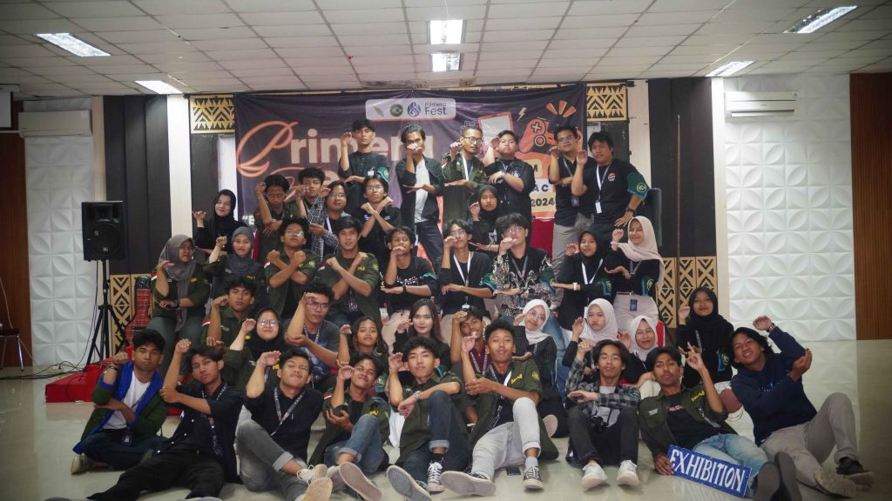

PRIMERA Fest 2024 : Ketika Seni Berkolaborasi dengan Teknologi

Himpunan Mahasiswa Informatika (HMIF) ITERA bekerja sama dengan Program Studi Teknik Informatika ITERA sukses menggelar PRIMERA Fest 2024, sebuah acara yang memadukan seni dan teknologi. Berlangsung pada hari Rabu, acara ini menghadirkan berbagai kegiatan menarik, termasuk Game Expo dan pertunjukan seni, yang menarik lebih dari 200 pengunjung dari berbagai latar belakang. Baca selengkapnya
Dari Jakarta Smart City ke Indosat: Mahasiswa Informatika Jelajahi Inovasi Digital Melalui Kuliah Lapangan

Program Studi Teknik Informatika Institut Teknologi Sumatera (ITERA) sukses menggelar Kuliah Lapangan selama dua hari berturut-turut, membawa 101 mahasiswa dan 8 pendamping untuk belajar langsung dunia teknologi informasi yang dinamis di Jakarta. Kegiatan ini merupakan langkah strategis untuk memperkaya pemahaman mahasiswa terhadap penerapan teknologi terkini di industri, sekaligus menginspirasi mereka untuk menjadi lulusan yang siap berkompetisi di era digital. Baca selengkapnya